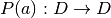
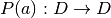

2. Actions and Transitions¶
Let  denote the finite action set of each individual (small)
player
denote the finite action set of each individual (small)
player  . Then
. Then  , denotes the
, denotes the
 -copies of an individual’s action space—i.e. the set of action
profiles
-copies of an individual’s action space—i.e. the set of action
profiles  . The finite set
. The finite set  has
has  number of
action profiles.
number of
action profiles.
For each action profile  , its associated Markov transition
probability function is a linear operator .
, its associated Markov transition
probability function is a linear operator .

 action profiles
of individual small players. A numeric array of size
action profiles
of individual small players. A numeric array of size  .
.